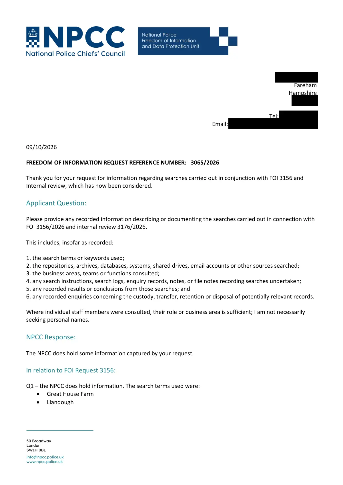

GHF-E106-R72-A1 WhatDoTheyKnow reply
NPCC FOI 3204/2026: searches described

Transcript
[address redacted] Fareham Hampshire [address redacted] Tel: [phone redacted] Email: [email redacted] 09/10/2026 FREEDOM OF INFORMATION REQUEST REFERENCE NUMBER: 3065/2026 Thank you for your request for information regarding searches carried out in conjunction with FOI 3156 and Internal review; which has now been considered. Applicant Question: Please provide any recorded information describing or documenting the searches carried out in connection with FOI 3156/2026 and internal review 3176/2026. This includes, insofar as recorded: 1. the search terms or keywords used; 2. the repositories, archives, databases, systems, shared drives, email accounts or other sources searched; 3. the business areas, teams or functions consulted; 4. any search instructions, search logs, enquiry records, notes, or file notes recording searches undertaken; 5. any recorded results or conclusions from those searches; and 6. any recorded enquiries concerning the custody, transfer, retention or disposal of potentially relevant records. Where individual staff members were consulted, their role or business area is sufficient; I am not necessarily
Read more
seeking personal names. NPCC Response: The NPCC does hold some information captured by your request. In relation to FOI Request 3156: Q1 – the NPCC does hold information. The search terms used were: • Great House Farm • Llandough Q2 – in relation to FOI request 3156, the NPCC does hold information. The repositories, archives, databases, systems, shared drives, email accounts or other sources searched were: • NPCC Shared drives • ChiefsNet • ACPO Archives • Folder named NPCC Counter Terrorism Coordination Committee • Records of the Association of Chief Police Officers 1856-2005 document Q3 - the business areas, teams or functions consulted – the NPCC can confirm information held and these were: • NPCC Crime Coordination committee • NPCC Business Support • Counter Terrorism Coordination Committee • NaCTSO Q4 - any search instructions, search logs, enquiry records, notes, or file notes recording searches undertaken The NPCC does not hold information captured by Q4. Outside of the act and as a gesture of goodwill, the NPCC has provided the information retrieval request which was sent to policing leads. Please see Annex B Q5 - any recorded results or conclusions from those searches. The NPCC does not hold information captured by Q5. In wishing to explain further, any results are captured via email, in which these have been disclosed to you by way of Q1-3 with policing leads responding. Q6 - any recorded enquiries concerning the custody, transfer, retention or disposal of potentially relevant records The NPCC does not hold information captured by Q6 In relation to FOI Internal Review 3176 The NPCC does not hold information for Q1-6. For more information on the exemptions and the risk of harm, please see Annex A below. Advice and Assistance The NPCC has considered its obligations under section 16 of the Freedom of Information Act 2000 to provide advice and assistance. Given the nature of the request and the outcome of the enquiries undertaken, we have been unable to identify any further advice or assistance that would assist in clarifying, narrowing, or otherwise amending the request to obtain information within scope. Yours sincerely NPCC FOI Officer www.npcc.police.uk COMPLAINT RIGHTS Right to Request an Internal Review We acknowledge your stated intention to pursue a complaint with the Information Commissioner in relation to these FOI responses and therefore on this occasion, it does not seem necessary or appropriate to handle a further Internal Review. Therefore, if you are dissatisfied with the way your request has been handled, please contact the ICO at Make a complaint | ICO www.ico.org.uk Annex A Legislation – Section 16 (1) It shall be the duty of a public authority to provide advice and assistance, so far as it would be reasonable to expect the authority to do so, to persons who propose to make, or have made, requests for information to it. Annex B – information retrieval email Good Afternoon: NaCTSO CT CC Business Support re ACPO archives, committee papers, policy files. Crime CC • This email is a request for information retrieval of recorded information captured by the following NPCC FOI request, forwarded to you in your capacity as staff officer/representative to the NPCC policing lead/national unit or business area (NPCC lawful obligations attached). Please note that FOI seeks recorded information only, if you are answering a question based on knowledge/expertise only, please advise so that I can record and respond ‘no information held’ and ensure your response is provided as a gesture of goodwill, outside of the Act: To remove any further doubt, I now expressly request the following recorded information under the Freedom of Information Act 2000. A. 1988 operation - "SAS Style Operation" in ITV footage not published until 2025 - https://youtu.be/4GXmR7mAas0 Any recorded information held by the NPCC, NaCTSO or any relevant NPCC function concerning the eviction, policing, security arrangements, occupation, enforcement of possession or demolition of Great House Farm, Llandough, South Wales, in 1988. This includes, where held: - operational orders or plans; - briefing material; - intelligence assessments; - incident or operational logs; - correspondence; - reports; - minutes; - debriefs; - photographs or other recorded media; - records identifying participating or supporting organisations; - records concerning the use or proposed use of specialist, armed, military or security personnel; - and records concerning liaison with other public authorities or private organisations. B. BP Properties Ltd v Buckler Any recorded information held concerning BP Properties Ltd v Buckler [1987] EWCA Civ 2, insofar as the case, the parties, Great House Farm, or the resulting possession/enforcement operation was considered by NPCC, NaCTSO, ACPO or any predecessor/successor national policing structure. I am particularly interested in any recorded material connecting the judgment with the subsequent 1988 operation. C. Police and security involvement Any recorded information identifying, or describing the involvement of: - South Wales Constabulary; - South Wales Police; - ACPO or any ACPO committee, working group or national policing function; - specialist police units; - military personnel or military units; - private security companies, bailiffs or enforcement agents; - or any other police, security or government body in planning, intelligence, security, support or execution of the 1988 operation. I am not asking the NPCC to confirm that any particular allegation is true. I am asking whether records concerning these matters exist and, where not exempt, to communicate them. D. Predecessor and successor records I recognise that the NPCC did not exist in 1988. The relevant national predecessor organisation was the Association of Chief Police Officers (ACPO), which existed from 1948 until 2015. I therefore request any recorded information held by the NPCC concerning: 1. records inherited, transferred or otherwise acquired from ACPO which refer to the matters above; 2. any ACPO committee, working group, national policing portfolio or other predecessor body which dealt with the relevant matter; 3. any later NPCC or NaCTSO record which refers to, indexes, summarises, preserves, archives or otherwise records the existence of earlier material concerning the 1988 operation. I am not suggesting that NPCC or NaCTSO themselves conducted the 1988 operation. The purpose of this part of the request is to establish the chain of custody and present location of any surviving national policing records. E. Searches and record location If you conclude that no substantive records are held, please confirm whether the appropriate NPCC functions and repositories were searched, including the Counter Terrorism Coordination Committee and any relevant historical/predecessor record holdings. Please also confirm, where possible, whether relevant records were: - transferred to another police force; - deposited with a local or national archive; - transferred from ACPO to another body; - destroyed under a retention/disposal schedule; - or otherwise ceased to be held by NPCC. I am not asking you to create new information or conduct an investigation. I am asking for information that is already recorded, including records showing the transfer, retention or disposal of relevant records. The ICO's records-management guidance recognises the importance of records showing where information was transferred, archived or destroyed, including the applicable disposal arrangements. F. Correct authority / section 16 assistance If the NPCC does not hold the requested information, please say so expressly. However, pursuant to the section 16 duty to provide reasonable advice and assistance, please identify the public authority or archival body which you consider most likely to hold the relevant records. This is particularly important because the historical force structure is identifiable: the police force operating in the relevant area in 1988 was South Wales Constabulary, and South Wales Police's own Heritage Centre states that Glamorgan Archives holds records of South Wales Police and its predecessor forces. If you consider that another public authority holds the information, please tell me which authority and, where practicable, provide the relevant contact point or record repository. • On confirmation that all or part of the information is held by the NPCC, and the fees limit will not be exceeded and other considerations discounted; please retrieve the information and provide it to us together with any thoughts regarding its potential disclosure specifically raising concerns of any harm or risk if the information is released – including external attendees of meetings (names and organisations represented). We can then identify any potential exemptions to engage based on your feedback. • I am unable to approach an external stakeholder for information retrieval in order to respond to this request (save for information held on behalf of the NPCC, for example MPS Finance / HR). This is a national request for information held by the NPCC only. Please do not refer this request to your force to respond. • If you feel that information captured by this request is also/may be held elsewhere within the NPCC, please advise and provide contact details. • Due to the time constraints of the legislation, I would appreciate a response no later than 15/09/2026. • Please provide any additional information that you would wish to be included within the response, outside of the Act if appropriate stating clearly that the information isn’t held and provided as a gesture of goodwill. Please do not hesitate to give me a call should you wish to discuss this further.
Artifact description
Response FOI 3204/2026 (letter attached): search terms, repositories and teams given for Q1–Q3; Q4–Q6 not held; the retrieval email sent to policing leads given outside the Act (Annex B); results were 'captured via email'.
| Catalogue ID | GHF-E106-R72-A1 |
|---|---|
| What it is | PDF document from National Police Chiefs' Council. Attached to an email received on 9 October 2026, their reference 3204/2026. 6 pages. |
| From | National Police Chiefs' Council |
| Email received | 9 October 2026 |
| Their reference | 3204/2026 |
| Pages | 6 |
| File | 3204 2026 NPCC Response Letter Searches captured.pdf (301 KB) |
| State | Read |
Our integration
NPCC response to FOI 3204/2026. It gives the search terms, repositories and teams used for questions 1–3, states questions 4–6 are not held, and supplies, outside the Act, the retrieval email sent to policing leads (Annex B). The results were "captured via email".
Why it matters: this is the most detailed account of a search on file from any body. It shows what a full answer about a search looks like, which is useful when reading the Wales Office's digital-only search (GHF-E106-R58-A1).
What cuts against the case: the search was real, documented and found nothing. That supports the NPCC's earlier answers (GHF-E106-R70-A1).
Related: Timeline · Disclosure Dartboard